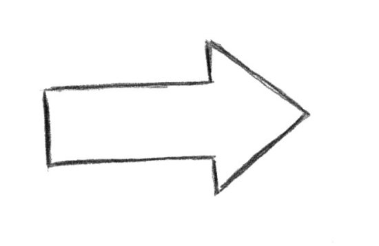

Процессор - основное вычислительное устройство компьютера
Эта величина показывает количество элементарных операций, которые способен выполнить процессор за 1 секунду.
Принцип многоядерности заключается в разбиении выполнения задач различными ядрами. Чем больше ядер, тем выше производительность.
Такая память позволяет процессору быстро получить доступ к определённым данным, которые часто используются.
С его помощью процессор подключается к материнской плате.
Чипсет выполняет роль связующего компонента, обеспечивающего совместное функционирование подсистем памяти, центрального процессора, ввода-вывода и т.д.
